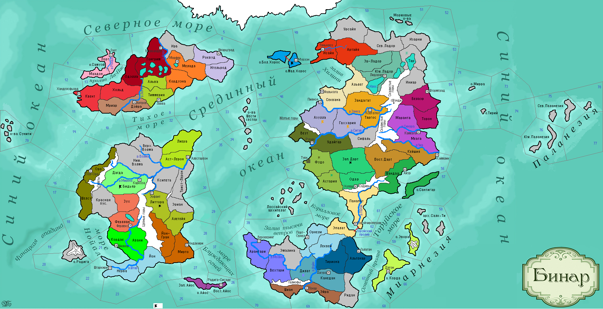

<==
| 1 |
| 2 |
| 3 |
| 4 |
| 5 |
==>

2-й ход истории мира Бинар (1100 г.)
· Князь Фриулеса Нойс Блазер умирает… Власть переходит к его сыну – Экхерту.
· Люди в моржовых шкурах, приплывшие с севера захватывают о.Малый Хорос!
· Файниты, под угрозой вторжения врагов с запада, вспомнили про традицию лесного быта.
· Народ Синар испокон веков уважает боевую дружбу и побратимство.
· Моран I приходит к власти в Дарте, утвердив новую династию Моранитов. Новый правитель прививает дартийцам традицию уважения старших.
· Шторм у западного побережья Загорры. Подписывается военный союз с гос-вом Санктум.
· Ксепхахоцкая армия наносит поражение муадогским силам в провинции Азулла. Ксеп Коппо-ярв I прикрепляет к своему щиту скальп убитого врага. Окрыленный успехом, ксеп ведет войска на штурм г.Пияноя, но попадает в заготовленную врагом глиняную яму и попадает в плен.
· Власти Астерлии закрывают посольства некоторых стран, отправивших ранее свои миссии. В моду у лиерийцев входят крашенные бороды.
· Краснолицые пустынники нападают на земли Бидьяра, где разбивают силы Санктума. Князь Судри I попадает в плен к варварам. Санктумцы ошибочно считают, что на них напали не варвары, а армия Ферлустана и объявляют им войну.
· Бэрны очень ценят благотворительность.
· Армия Ладориана совершает поход в земли Тар и разбивает там местных каннибалов.
· Торуйский князь Парайо I сыграл пышную свадьбу, в соответствии с принятыми в народе обычаями.
· Ульнар и Синарал заключают оборонительный союз.
· Армия Моэдаса захватывает провинцию Дилат. В сражении при р.Файн армия Темпеста одерживает верх над врагом.
· Корфелы стали воздвигать над своими погребениями курганы.
· Армия Темпеста отразила удар и атуанских сил в провинции Канедан, защитив свои леса.
· В Вестервальде в 1105 г. основана религия Асатра. Идейным отцом нового учения стал волхв Зигманд, убеждавший соотечественников в существовании загробного Рая, т.е. собственно Асатры.
· «Не солгать, так и не продать» - гласит народная пословица хилингов, отражающая их традиции торговли.